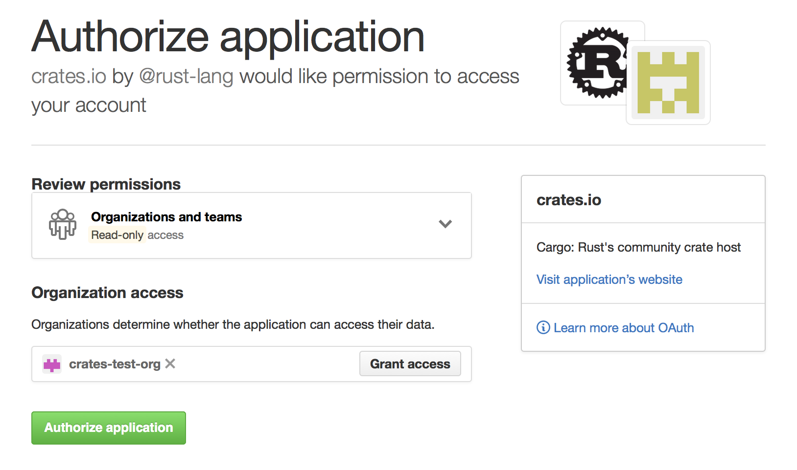

Publishing on crates.io
Once you've got a library that you'd like to share with the world, it's time to publish it on crates.io! Publishing a crate is when a specific version is uploaded to be hosted on crates.io.
Take care when publishing a crate, because a publish is permanent. The version can never be overwritten, and the code cannot be deleted. There is no limit to the number of versions which can be published, however.
Before your first publish
First thing’s first, you’ll need an account on crates.io to acquire
an API token. To do so, visit the home page and log in via a GitHub
account (required for now). After this, visit your Account
Settings page and run the cargo login command
specified.
$ cargo login abcdefghijklmnopqrstuvwxyz012345
This command will inform Cargo of your API token and store it locally in your
~/.cargo/credentials. Note that this token is a secret and should not be
shared with anyone else. If it leaks for any reason, you should regenerate it
immediately.
Before publishing a new crate
Keep in mind that crate names on crates.io are allocated on a first-come-first- serve basis. Once a crate name is taken, it cannot be used for another crate.
Check out the metadata you can
specify in Cargo.toml to ensure
your crate can be discovered more easily! Before publishing, make sure you have
filled out the following fields:
authorslicenseorlicense-filedescriptionhomepagedocumentationrepository
It would also be a good idea to include some keywords and categories,
though they are not required.
If you are publishing a library, you may also want to consult the Rust API Guidelines.
Packaging a crate
The next step is to package up your crate and upload it to crates.io. For
this we’ll use the cargo publish subcommand. This command performs the following
steps:
- Perform some verification checks on your package.
- Compress your source code into a
.cratefile. - Extract the
.cratefile into a temporary directory and verify that it compiles. - Upload the
.cratefile to crates.io. - The registry will perform some additional checks on the uploaded package before adding it.
It is recommended that you first run cargo publish --dry-run (or cargo package which is equivalent) to ensure there aren't any warnings or errors
before publishing. This will perform the first three steps listed above.
$ cargo publish --dry-run
You can inspect the generated .crate file in the target/package directory.
crates.io currently has a 10MB size limit on the .crate file. You may want
to check the size of the .crate file to ensure you didn't accidentally
package up large assets that are not required to build your package, such as
test data, website documentation, or code generation. You can check which
files are included with the following command:
$ cargo package --list
Cargo will automatically ignore files ignored by your version control system
when packaging, but if you want to specify an extra set of files to ignore you
can use the exclude
key in the
manifest:
[package]
# ...
exclude = [
"public/assets/*",
"videos/*",
]
If you’d rather explicitly list the files to include, Cargo also supports an
include key, which if set, overrides the exclude key:
[package]
# ...
include = [
"**/*.rs",
"Cargo.toml",
]
Uploading the crate
When you are ready to publish, use the cargo publish command
to upload to crates.io:
$ cargo publish
And that’s it, you’ve now published your first crate!
Publishing a new version of an existing crate
In order to release a new version, change the version value specified in
your Cargo.toml manifest. Keep in mind the semver
rules, and consult RFC 1105 for
what constitutes a semver-breaking change. Then run cargo publish as
described above to upload the new version.
Managing a crates.io-based crate
Management of crates is primarily done through the command line cargo tool
rather than the crates.io web interface. For this, there are a few subcommands
to manage a crate.
cargo yank
Occasions may arise where you publish a version of a crate that actually ends up being broken for one reason or another (syntax error, forgot to include a file, etc.). For situations such as this, Cargo supports a “yank” of a version of a crate.
$ cargo yank --vers 1.0.1
$ cargo yank --vers 1.0.1 --undo
A yank does not delete any code. This feature is not intended for deleting accidentally uploaded secrets, for example. If that happens, you must reset those secrets immediately.
The semantics of a yanked version are that no new dependencies can be created
against that version, but all existing dependencies continue to work. One of the
major goals of crates.io is to act as a permanent archive of crates that does
not change over time, and allowing deletion of a version would go against this
goal. Essentially a yank means that all packages with a Cargo.lock will not
break, while any future Cargo.lock files generated will not list the yanked
version.
cargo owner
A crate is often developed by more than one person, or the primary maintainer may change over time! The owner of a crate is the only person allowed to publish new versions of the crate, but an owner may designate additional owners.
$ cargo owner --add my-buddy
$ cargo owner --remove my-buddy
$ cargo owner --add github:rust-lang:owners
$ cargo owner --remove github:rust-lang:owners
The owner IDs given to these commands must be GitHub user names or GitHub teams.
If a user name is given to --add, that user is invited as a “named” owner, with
full rights to the crate. In addition to being able to publish or yank versions
of the crate, they have the ability to add or remove owners, including the
owner that made them an owner. Needless to say, you shouldn’t make people you
don’t fully trust into a named owner. In order to become a named owner, a user
must have logged into crates.io previously.
If a team name is given to --add, that team is invited as a “team” owner, with
restricted right to the crate. While they have permission to publish or yank
versions of the crate, they do not have the ability to add or remove owners.
In addition to being more convenient for managing groups of owners, teams are
just a bit more secure against owners becoming malicious.
The syntax for teams is currently github:org:team (see examples above).
In order to invite a team as an owner one must be a member of that team. No
such restriction applies to removing a team as an owner.
GitHub permissions
Team membership is not something GitHub provides simple public access to, and it is likely for you to encounter the following message when working with them:
It looks like you don’t have permission to query a necessary property from GitHub to complete this request. You may need to re-authenticate on crates.io to grant permission to read GitHub org memberships. Just go to https://crates.io/login.
This is basically a catch-all for “you tried to query a team, and one of the five levels of membership access control denied this”. That is not an exaggeration. GitHub’s support for team access control is Enterprise Grade.
The most likely cause of this is simply that you last logged in before this
feature was added. We originally requested no permissions from GitHub when
authenticating users, because we didn’t actually ever use the user’s token for
anything other than logging them in. However to query team membership on your
behalf, we now require the read:org scope.
You are free to deny us this scope, and everything that worked before teams were introduced will keep working. However you will never be able to add a team as an owner, or publish a crate as a team owner. If you ever attempt to do this, you will get the error above. You may also see this error if you ever try to publish a crate that you don’t own at all, but otherwise happens to have a team.
If you ever change your mind, or just aren’t sure if crates.io has sufficient permission, you can always go to https://crates.io/login, which will prompt you for permission if crates.io doesn’t have all the scopes it would like to.
An additional barrier to querying GitHub is that the organization may be actively denying third party access. To check this, you can go to:
https://github.com/organizations/:org/settings/oauth_application_policy
where :org is the name of the organization (e.g., rust-lang). You may see
something like:

Where you may choose to explicitly remove crates.io from your organization’s blacklist, or simply press the “Remove Restrictions” button to allow all third party applications to access this data.
Alternatively, when crates.io requested the read:org scope, you could have
explicitly whitelisted crates.io querying the org in question by pressing
the “Grant Access” button next to its name:
